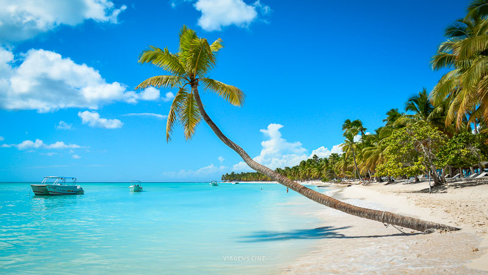
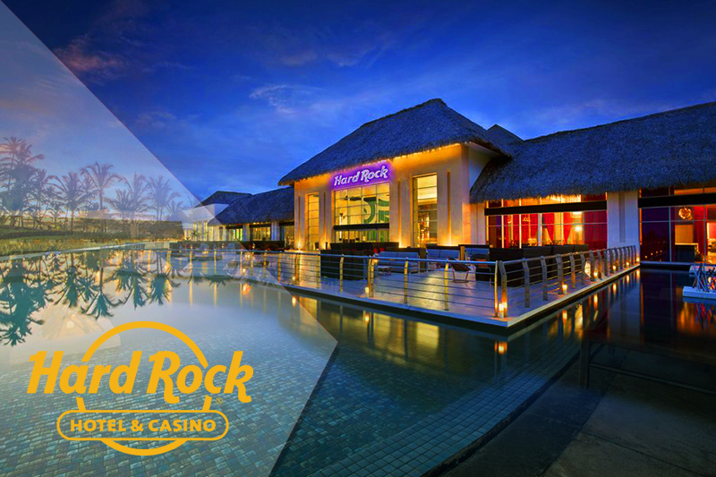
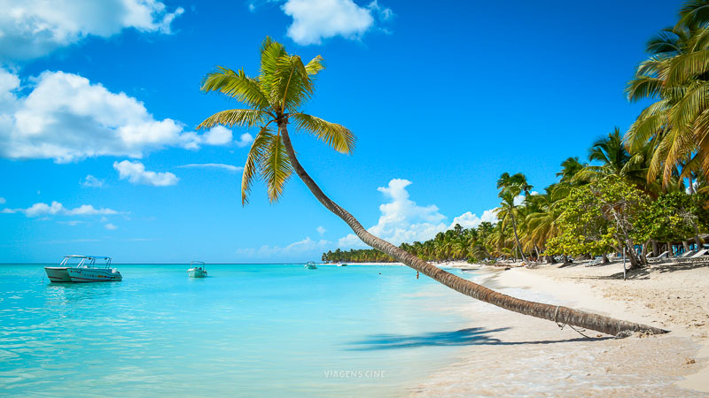
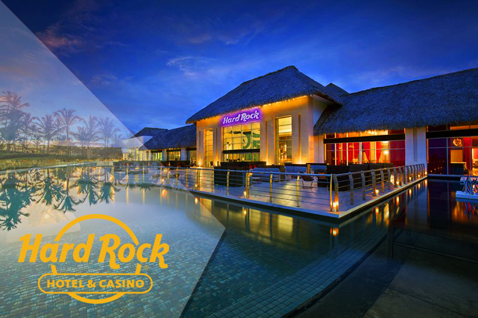
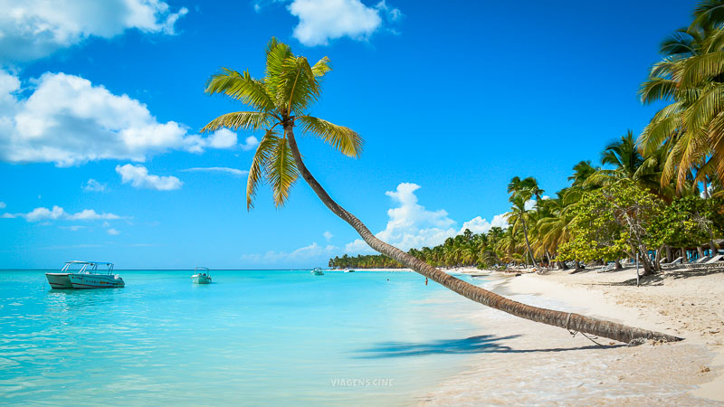
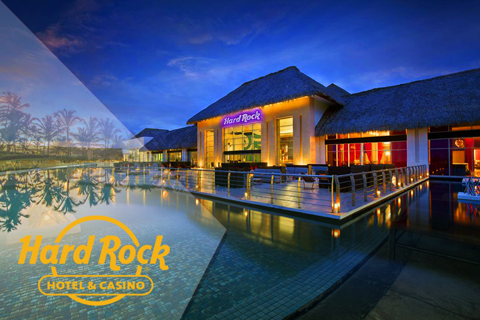

La playa de Punta Cana se encuentra ubicada en República Dominicana. Las playas son de arena blanca y fina, y el mar Caribe de un suave color azul verdoso, sin alcanzar el turquesa de las playas caribeñas situadas más al sur. El mar presenta generalmente oleaje y la playa se hunde muy rápidamente en el mar. El agua siempre es transparente y abundan las algas en algunas áreas. El clima es constante, con temperaturas medias de 26 °C, siendo el intervalo de temperaturas de unos 12 grados, desde los 20 °C en invierno hasta los 32 °C de máxima entre abril y noviembre, siendo un clima ideal para pasar unas vacaciones relajantes. Su hotel mas visitado es el Hard Rock Hotel and Casino. Y además cuenta con una superficie total de 420 000 m²


La playa de Mar del Plata esta ubicada en el sudeste de la provincia de Buenos Aires, Argentina. Es la cabecera del partido de General Pueyrredòn, un importante puerto y balneario, y es el segundo destino turistico más importante del país. Las principales industrias son la pesca, el turísmo y el textil. La pesca, es la actividad principal del puerto que se complementa con barcos petroleros y cerealeros, y también cuenta con una base naval de submarinos. Entre la gran variedad de industrias, se destacan las derivadas de la horticultura, la construcción, la metalúrgica y la mecánica. El club atlético de Aldosivi es el mas represenativo de la cuidad y actualmente se encuentra jugando la Primera Nacional de fútbol argentino. El clima de Mar del Plata es templado oceánico, con precipitaciones abundantes durante todo el año, y sus temperaturas en verano son suaves con una máxima de 35 grados y el invierno fresco con temperaturas de entre 2 y 3 grados.
La playa de Copacabana es uno de los barrios màs famosos de la cuidad de Rio de Janiero, Brasil. Esta localizada en la zona sur de la cuidad tiene su playa en forma de media luna y es apodada "Princesita del Mar". Dio origen a numerosos eventos y movimientos artísticos, convirtiéndose en un atratictivo turistico por su valor cultural. El barrio tiene gran cantidad de restaurantes, cines, bancos, sinagogas (tradicionalmente abriga a la comunidad judía carioca), locales comerciales y teatros. La mejor época para visitar este lugar es entre abril y julio. La temperatura màs alta es de 35 grados en septiembre y la màs baja de 29 grados en febrero. Y como dato de color fue uno de los lugares elegidos para filmar Rápidos y furiosos: 5in control.